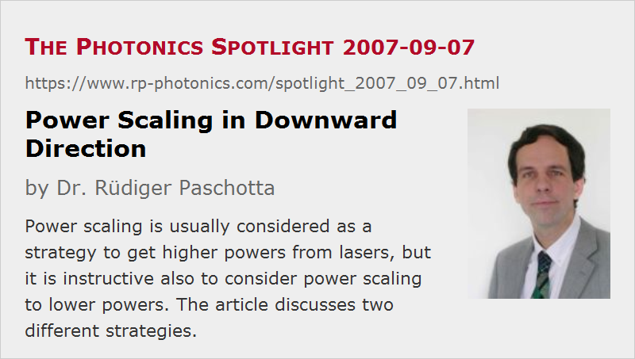

Power Scaling in Downward Direction
Posted on 2007-09-07 as a part of the Photonics Spotlight (available as e-mail newsletter!)
Permanent link: https://www.rp-photonics.com/spotlight_2007_09_07.html
Author: Dr. Rüdiger Paschotta, RP Photonics Consulting GmbH
Abstract: Power scaling is usually considered as a strategy to get higher powers from lasers, but it is instructive also to consider power scaling to lower powers. The article discusses two different strategies.

Ref.: encyclopedia articles on power scaling of lasers, nanofibers, thresholdless lasers
Although many people are interested in lasers with higher output powers, it is not altogether stupid to consider how we could get down to lower powers. It will of course not be a satisfactory solution simply to operate a laser closer and closer to the laser threshold, since this would make the device very inefficient and also sensitive to tiny fluctuations of the pump power. The ideal thing would be a systematic procedure telling us exactly how to construct lasers with lower and lower output powers, without spoiling essential features such as the power efficiency and stability. So this is clearly an issue of power scaling – only this time in downward direction!
Scaling of Mode Areas
While the main challenge for scaling toward higher powers is often in the domain of thermal effects (e.g. thermal lensing or crystal fracture), lower output powers with preserved power efficiency require lower threshold pump powers. What can we do?
- Exchanging the material of the gain medium (e.g. with one having a higher gain efficiency) can help, but this is not power scaling, since it is a non-repeatable measure.
- We also wouldn't get far by reducing the resonator losses, since the efficiency would then more and more be compromised by parasitic losses, and there is normally no systematic procedure to reduce those.
- So the only way is to reduce the effective mode area in the gain medium in proportion to the power level, while keeping the laser gain, the resonator losses and the length of the gain medium constant.
As we get down in mode area, the effect of diffraction becomes stronger and stronger. Once the Rayleigh length becomes significantly smaller than the length of the gain medium, we have to use a waveguide. A conventional type of optical fiber with a doped single-mode core will be limiting, since it would require a higher and higher numerical aperture (NA), i.e., a higher and higher refractive index contrast. A wide range for power scaling will be obtained for fibers with a very high NA, where one can reduce the waveguide diameter significantly below the wavelength. So we get into the domain of nanofibers (also called photonic nanowires)! I am actually not aware of laser-active nanofibers, but this would seem to be an interesting area of research. A challenge will probably be to efficiently inject pump light (via a fiber taper?).
Another Way to Lower the Pump Threshold
An altogether different approach is that of the thresholdless laser. The key idea is modify the surroundings of the active area so as to suppress spontaneous emission into unused modes of the radiation field. In that way, one avoids the power loss via spontaneous emission, which is the fundamental reason for a non-zero threshold power. This principle can be applied e.g. to vertical cavity surface-emitting lasers, leading to threshold pump powers well below 1 mW.
In any case, power scaling in the downward direction doesn't appear to be entirely simple, at least if one wants to penetrate the regime of threshold powers far below 1 mW. And as for high power lasers, ideas for truly scalable approaches are rare.
This article is a posting of the Photonics Spotlight, authored by Dr. Rüdiger Paschotta. You may link to this page and cite it, because its location is permanent. See also the RP Photonics Encyclopedia.
Note that you can also receive the articles in the form of a newsletter or with an RSS feed.
Questions and Comments from Users
Here you can submit questions and comments. As far as they get accepted by the author, they will appear above this paragraph together with the author’s answer. The author will decide on acceptance based on certain criteria. Essentially, the issue must be of sufficiently broad interest.
Please do not enter personal data here; we would otherwise delete it soon. (See also our privacy declaration.) If you wish to receive personal feedback or consultancy from the author, please contact him e.g. via e-mail.
By submitting the information, you give your consent to the potential publication of your inputs on our website according to our rules. (If you later retract your consent, we will delete those inputs.) As your inputs are first reviewed by the author, they may be published with some delay.
|  |
If you like this page, please share the link with your friends and colleagues, e.g. via social media:
These sharing buttons are implemented in a privacy-friendly way!